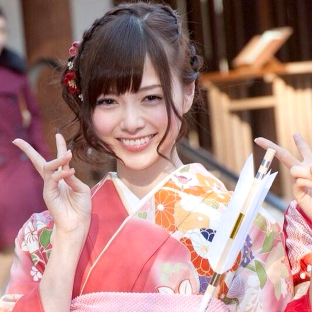

Changer Langue


Vous ne le savez ou ne le réalisez peut-être, mais le Japon est potentiellement le meilleur pays du monde. Vous pouvez trouver tout ce que vous voulez au Japon! Vous m'avez bien entendu. En fait, vous serez surpris de découvrir de nouvelles choses inédites dans ce pays! Voici quelques-unes des choses spéciales au Japon:
La cuisine japonaise offre une abondance de plats super délicieux avec une variété illimitée de plats régionaux et de saison. La cuisine japonaise englobe les aliments régionaux et traditionnels du Japon, qui se sont développés à travers des siècles de changements politiques, économiques et sociaux. La cuisine traditionnelle du Japon, est à base de riz avec soupe Miso et autres plats. Les accompagnements sont souvent composés de poisson, de légumes marinés et de légumes cuits dans un bouillon. Les fruits de mer sont communs, souvent grillés, mais également servis crus en Sashimi ou en Sushi. Les fruits de mer et les légumes sont également frits dans une pâte légère, comme la Tempura. Outre le riz, les aliments de base comprennent les nouilles, comme le Soba et l'Udon.
Voici quelques plats japonais incontournables:Quelques Ingrédients:
Quelques ingrédients:
Quelques ingrédients:

Le Japon est bien connu pour son industrie électronique dans le monde entier, et les produits électroniques japonais représentent une part importante du marché mondial, par rapport à la majorité des autres pays. Le Japon est l'un des principaux pays dans les domaines de la recherche scientifique, de la technologie, des machines et de la recherche médicale. Le Japon a reçu le plus de prix Nobel scientifiques en Asie. Le Japon compte de grands conglomérats internationaux d'entreprises tels que Fuji (qui a développé le premier ordinateur électronique du pays, FUJIC1999, en 1956) et Sony. Sony, Panasonic, Canon, Fujitsu, Hitachi, Sharp, NEC, Nintendo, Epson et Toshiba figurent parmi les sociétés d'électronique les plus connues au monde. Toyota, Honda, Nissan, Mazda, Mitsubishi, Suzuki et Subaru sont également des constructeurs automobiles très connus dans le monde.
Vous ne pouvez même pas le voir passer!
Voici Erica, une Androïde

Ils donnent un nouveau charme à la nuit
Stocke horizontalement au lieu de verticalement
Les traditions au Japon ne sont pas similaires au reste du monde. Pourquoi? Parce que les traditions japonaises sont très uniques et merveilleux. Vous pourrez toujours dire si c'est "japonais" ou pas. La raison principale c'est que le Japon a était une île isolé pendant longtemps. Ainsi, il n'a pas été influencé par des cultures extérieures. C'est pourquoi il reste encore très unique en termes de culture.
Voici des exemples qui expliquent ceci!
Les Japonais sont si polis et respectueuxqu'ils s'inclinent souvent en signe de respect.
Les femmes japonaises sont très belles!
Gardez à l'esprit que ce ne sont que des exemples. Il y en a encore beaucoup au Japon!
«Utilisez la barre de navigation pour en savoir plus»